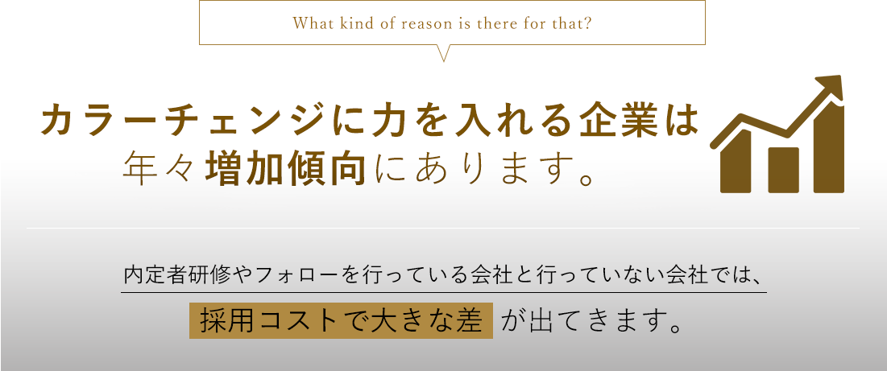
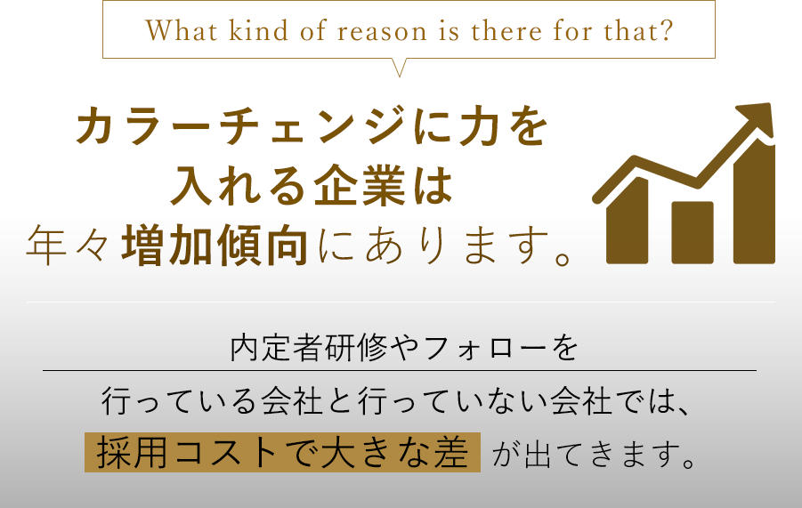
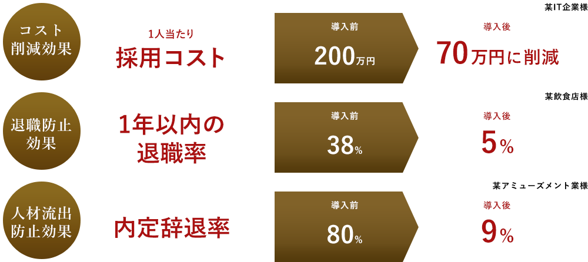
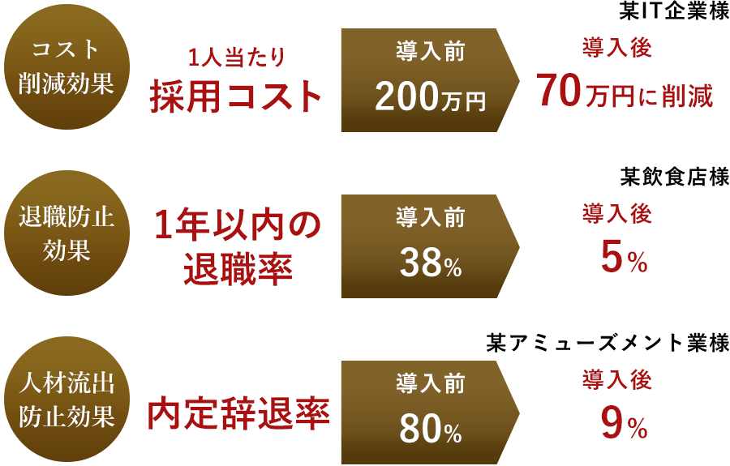

Q.
内定者研修って
本当に必要ですか？
A.
必要です。
What does affect YELL LIFE?
エールライフの内定者研修は、
新卒採用に大きな効果を与えます。


”内定者ブルー”って知っていますか？
内定者ブルーとは、内定が決まったはいいものの、「本当にこれでよかったのか？」と
考えてしまう、結婚前に不安を感じる『マリッジブルー』のような
状態のことをいいます。
内定者はこんな事を不安に思っています。
不安が解消しきれないままだと内定者辞退につながってしまいます。
戦略的に内定者のフォローを行わなければ、効果は期待できません
エールライフの内定者研修では、このような悩みを払拭し、ライバル企業への流出を防ぎ、時期や不安に合わせた適切なフォローを行うことで内定者の承諾率を高めます。
内定者研修には
3つの
大きなメリットがあります。
-
内定者辞退の防止
入社までの期間に行動心理学に基づいた戦略的且つ継続的なフォローを行うことで、内定者の辞退を防止することができます。
-
早期離職の防止
内定者同士の絆を深め、助け合い精神を育むことで、入社後の早期離職を未然に防ぐことができます。
-
即戦力人材の教育
入社前に内定者研修を行うことで、社会人として基礎力を身に着けることができ、早期の即戦力化に繋がります。
これら全てが採用コストの削減に繋がります。
リピーター率
92.8%が
「やってよかった」の証拠です！
エールライフの内定者研修では、内定辞退防止研修において300社以上の実績があります。
PERFORMANCE
 内定者にオススメな
3つの研修
RECOMENDED TRAINING
TRAINING1
オーバーナイト50kmハイク研修
精神力と忍耐をつけ、同期の絆を深める。
オーバーナイト50㎞ハイク研修とは、3～6人のチームに分かれ、夜通しかけて約15時間の道のりを、眠気、寒さ、足の痛みなどの辛さに耐えながら歩ききることで、精神力と忍耐力の強化を図り、目標達成意欲を高める体感型研修です。
また、互いに思いやり、励まし合いながら、コミュニケーションを深めることで同期同士の絆を形成し、共通目標を達成することで、『一生涯忘れることのない感動』を共有し、会社への帰属意識を高めます。
TRAINING2
ライフデザイン研修
入社後のライフプランを立て、内定者の不安を払拭します。
内定者個々の夢（ビジョン）を明確化し、更には会社の方針や経営理念の理解を深め、自分自身と会社の関係をWIN-WINにすることで、貴社への入社意欲が高まり内定辞退・早期離職の防止を図ります。2日間のプログラムすべてがグループワークとなっており、同期に対しての自己開示により相互理解が深まり、より強い人間関係を形成します。特に内定者の辞退率が高い企業や、入社後ミスマッチにより早期離職が多い企業へ推奨できる研修となります。
TRAINING3
キャンプ研修
体感を通して社会人としての意識を形成する
キャンプ研修とは、非日常の環境の中で、同期同士が4～5名のグループになり様々な課題をメンバーで力を合せ乗り越える研修で、自立心・仲間の大切さ・規律・リーダーシップを肌で感じ取り、社会人の心構えとスキルを体得します。また、メンバーで創意工夫をして作る野外料理、チームメンバーと助け合いのもと他チームと競い合うプログラム、同期同士で感動を共有するキャンプファイヤーなど様々なプログラムを通して一生涯忘れることの無い思い出をつくります。当該研修を通し、同期同士の絆を深めることで、内定者の辞退、入社後の早期離職を防止します。
迷ったらまずはご相談を！
人材や組織のお悩みがございましたら、お気軽にご相談ください。
豊富な研修の中から最適な研修をご提案致します。